În stînga este slide-ul din curs, în dreapta aceeași figură, calculată în browser din aceleași date. Butonul ▶ modifică parametrul pas cu pas.
Optimizarea medie–varianță · Riscul de estimare · Shrinkage al covarianței · Black–Litterman · Risk parity și Hierarchical Risk Parity · Evaluarea out-of-sample · Un portofoliu de blue chips BVB · Studii de caz: frontiera implementabilă și portofoliile gestionate după volatilitate
Optimizarea medie–varianță
Două active: efectul corelației asupra diversificării
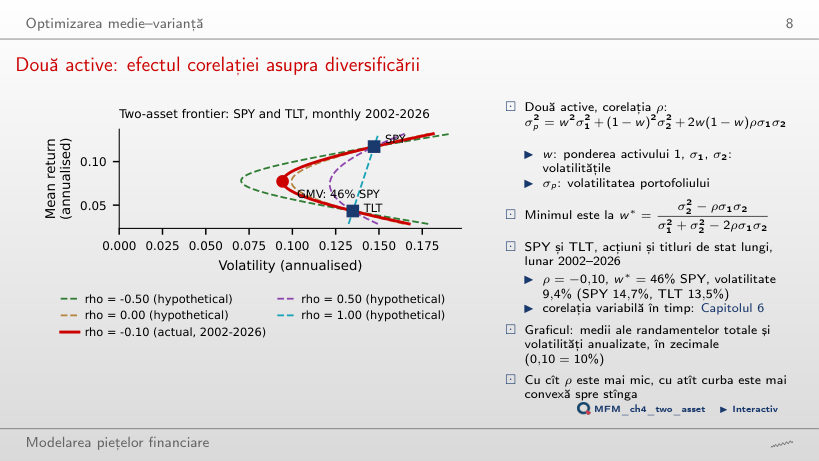
Răspuns
Scade de la 13,5% pînă la zero. La corelația 1, portofoliul de varianță minimă este numai TLT; sub corelația 0,92 (raportul 13,5/14,7) include și SPY. La corelația estimată, −0,10, are 46% în SPY și o volatilitate de 9,4%. La −1, cu 48% în SPY, volatilitatea este zero. Volatilitatea portofoliului este media ponderată a volatilităților doar cînd corelația este 1.
Frontiera sectoarelor din SUA
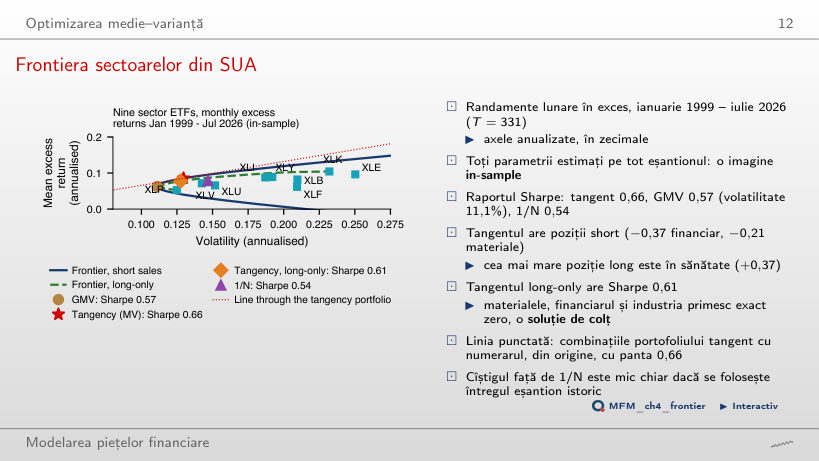
Răspuns
Nu. Portofoliul tangent este short pe XLF (−37%) și XLB (−21%), deși ambele au medii pozitive. Semnul unei ponderi depinde de întregul vector al mediilor și de covarianțe: corelația 0,85 a lui XLB cu XLI sau raportul Sharpe mic al lui XLF nu îl explică singure. Restricția long-only scade raportul Sharpe de la 0,66 la 0,61.
Riscul de estimare
Maximizarea erorii: frontiere estimate față de frontiere realizate
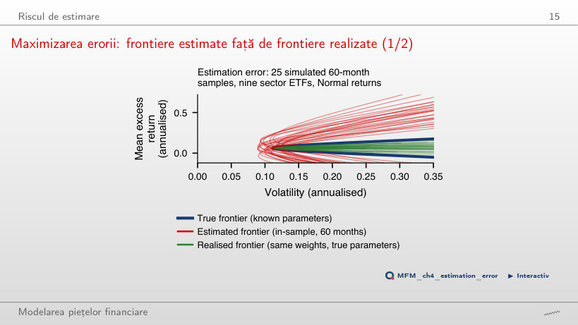
Răspuns
În aproximativ 4% dintre eșantioane. În simularea din pagină, 18 dintre cele 500 de portofolii (3,6%) depășesc 1/N; în cea din curs, cu 2.000 de portofolii, 4%. Mediana raportului Sharpe evaluat cu parametrii adevărați este 0,30, față de 0,54 pentru 1/N. Mediana raportului Sharpe estimat în eșantion este 1,51 în pagină și 1,56 în curs.
Ponderi instabile
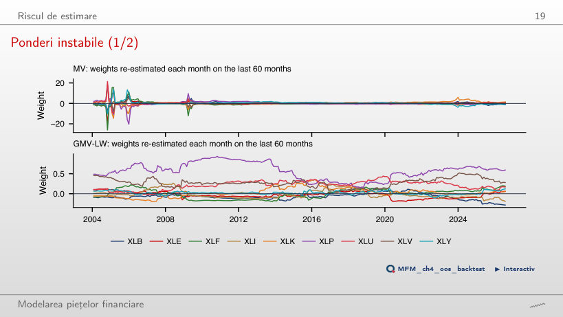
Răspuns
În iulie 2026, ultima lună, expunerea brută (suma valorilor absolute ale ponderilor) este 7,1 pentru MV și 1,9 pentru GMV-LW: shrinkage nu elimină pozițiile short. Pe toată perioada, medianele sînt 4,9 pentru MV și 1,5 pentru GMV-LW. Cea mai mare pondere MV, în valoare absolută, este 26; în 90% dintre luni expunerea brută MV depășește 3.
Lungimea ferestrei necesară pentru a depăși 1/N
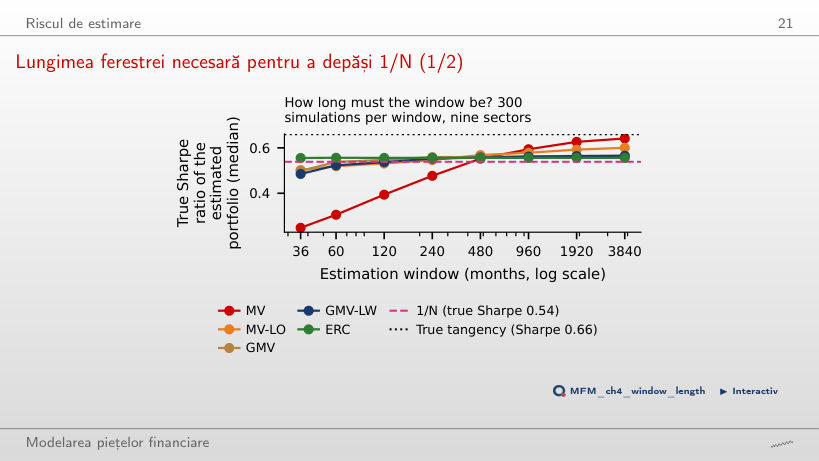
Răspuns
Dintre ferestrele testate, prima este de 480 de luni: mediana raportului Sharpe MV este 0,55, față de 0,54 pentru 1/N; la 240 de luni este încă 0,48. GMV trece de 1/N de la 120 de luni, iar ERC este peste 1/N la toate ferestrele, pentru că nu folosesc mediile estimate.
Shrinkage al covarianței
Valorile proprii de eșantion și banda de zgomot
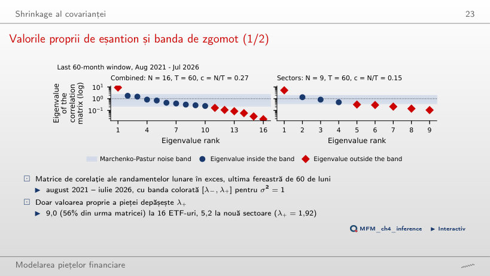
Răspuns
Una singură, 9,02: factorul comun al pieței, care explică 56% din varianța totală. Pentru N = 16 și T = 60, banda este [0,23; 2,30]. O singură valoare proprie depășește limita superioară; nouă sînt în bandă, iar șase sînt sub limita inferioară.
Shrinkage pe sectoarele din SUA
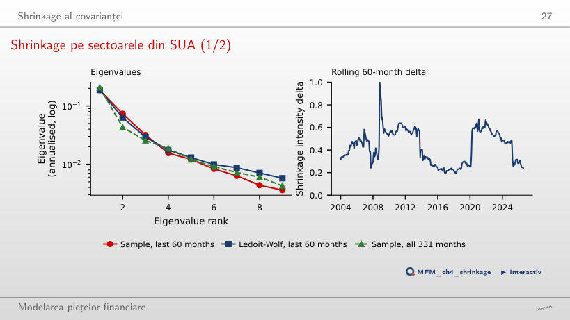
Răspuns
Cea mai mică valoare proprie crește (de la 0,0036 la 0,0058 pentru δ = 0,25), iar numărul de condiționare scade de la 52 la 32,1. Intensitatea Ledoit–Wolf estimată pe ultimele 60 de luni este 0,24, pentru care numărul de condiționare este 32,5. Cea mai mare valoare proprie aproape nu se schimbă (de la 0,1861 la 0,1871). Nici la δ = 1 valorile proprii nu devin egale: ținta cu corelație constantă are numărul de condiționare 21. Ponderile GMV devin mai puțin extreme.
Black–Litterman
Black–Litterman pe sectoarele din SUA
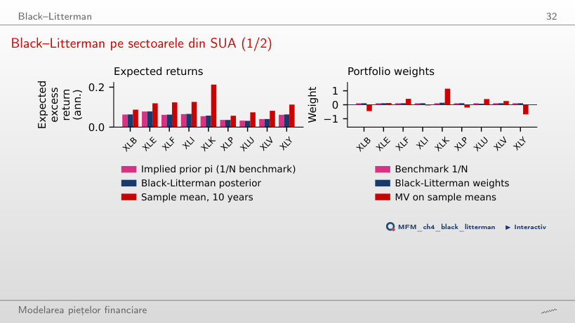
Răspuns
Nu se schimbă. Ponderea XLK crește și ponderea XLU scade cu aceeași cantitate, 3,3 puncte procentuale. Diferența a posteriori XLK − XLU este 2,6% pe an, între media a priori de 2,2% și opinia de 3%. Mediile celorlalte sectoare se modifică prin corelațiile cu XLK și XLU, dar ponderile lor rămîn 1/N.
Risk parity și Hierarchical Risk Parity
Ponderi și contribuții la risc
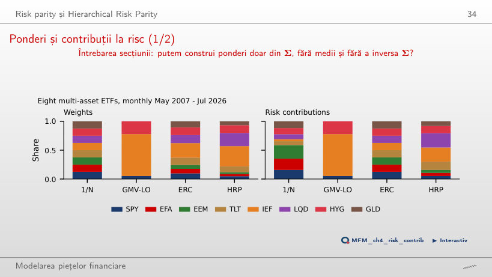
Răspuns
69%. Dacă se folosesc numai varianțele individuale, fără covarianțe, partea lor ar fi 64%. Contribuțiile egale la risc (ERC) mută capital spre titlurile de stat: IEF primește 25,1%, iar contribuția fiecărui activ la risc devine 12,5%.
HRP pe 16 ETF-uri
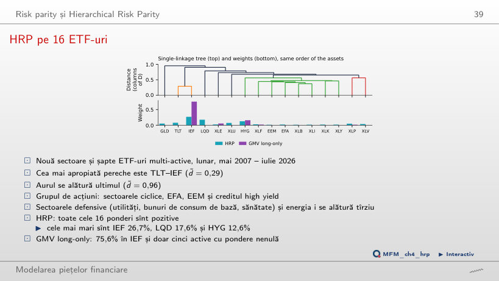
Răspuns
HRP ordonează activele după arborele de corelații, calculează varianța fiecărui portofoliu de grup cu ponderi inverse varianței individuale și împarte recursiv capitalul între grupuri. Covarianțele intră în calculul acestor varianțe, fără inversarea matricei, care amplifică erorile de estimare. GMV long-only pune ponderi nenule pe doar 5 dintre cele 16 ETF-uri.
Evaluarea out-of-sample
Evoluția averii out-of-sample: multi-active
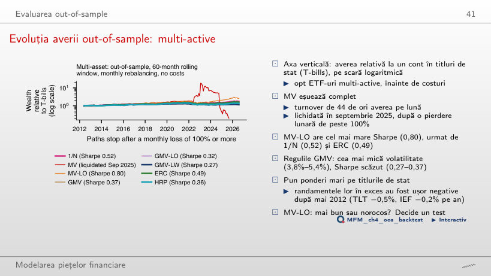
Răspuns
MV-LO, cu 0,80, urmată de 1/N cu 0,52 și ERC cu 0,49. MV fără restricții este lichidată în septembrie 2025, după o pierdere lunară de peste 100%: averea ei ajunge la zero, deci nu intră în clasament.
Rapoartele Sharpe în cele trei universuri
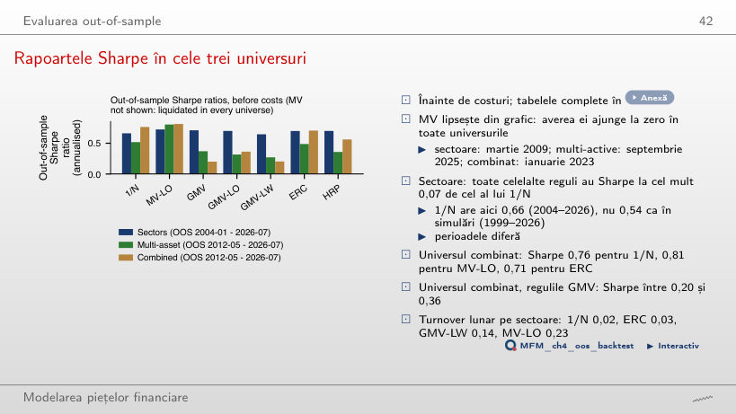
Răspuns
Nu. Ordinea depinde de perioada evaluată. Pe sectoare, HRP depășește 1/N cînd evaluarea începe în 2004 (0,70 față de 0,66), dar rămîne sub 1/N cînd începe în 2019 (0,79 față de 0,80). MV fără restricții lipsește din grafic: averea ei ajunge la zero în toate cele trei universuri.
Rapoartele Sharpe după costuri
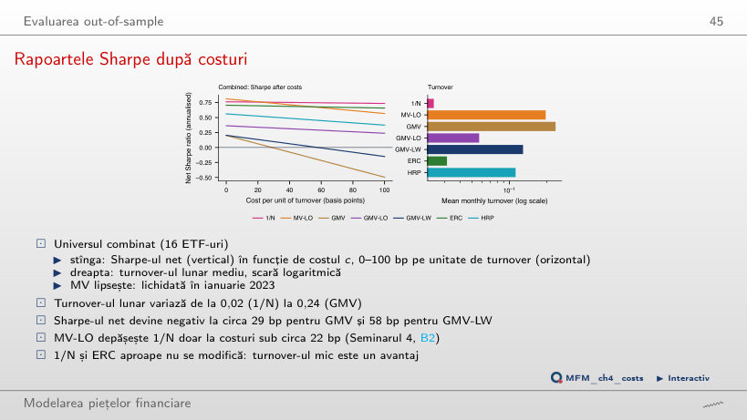
Răspuns
La circa 29 bp: costul mediu lunar egalează atunci media randamentului brut în exces al GMV, care tranzacționează în medie 24% din avere pe lună, astfel încît Sharpe-ul net ajunge la zero. GMV-LW trece sub zero la circa 58 bp, iar MV-LO coboară sub 1/N la circa 22 bp. 1/N scade doar de la 0,76 la 0,75 la 50 bp. MV lipsește: este lichidată în ianuarie 2023.
Testul diferenței de Sharpe față de 1/N
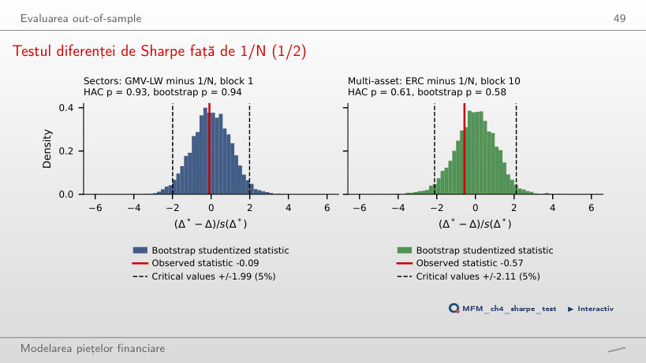
Răspuns
Nu. Diferența rapoartelor Sharpe este −0,02, cu p = 0,93 (HAC) și p = 0,94 (bootstrap). Un p-value mare nu este probabilitatea ca diferența să fie reală. Histograma arată diferențe bootstrap centrate; p-value-ul raportat provine din testul bootstrap studentizat. Niciuna dintre regulile estimate nu bate 1/N semnificativ în cele trei universuri.
Un portofoliu de blue chips BVB
Portofoliile BVB față de BET-TR
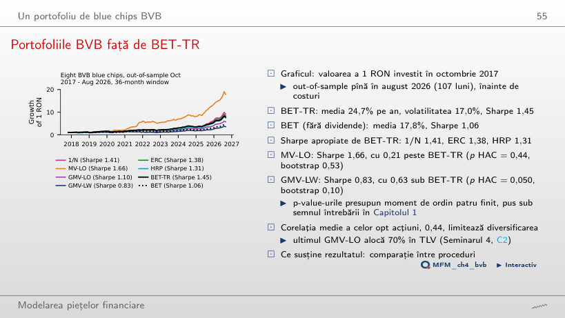
Răspuns
MV-LO are raportul Sharpe 1,66 față de 1,45 pentru BET-TR, dar diferența nu este semnificativă (p = 0,44, HAC). Un test nesemnificativ nu arată că cele două rapoarte Sharpe sînt egale în populație: arată doar că datele nu le separă. 1/N are 1,41, iar ERC 1,38.
Studii de caz: frontiera implementabilă și portofoliile gestionate după volatilitate
Gestionarea după volatilitate pe datele cursului
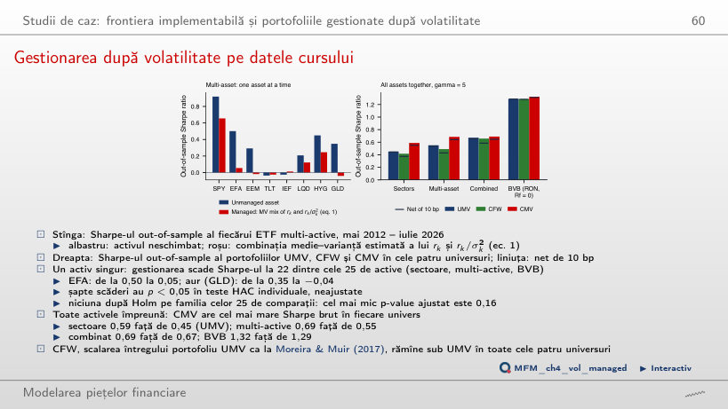
Răspuns
Da, dar diferența nu este semnificativă. CMV are Sharpe brut 0,685, față de 0,551 pentru UMV, cu p bootstrap unilateral de 0,25, pentru că ponderile relative ale activelor se schimbă cu volatilitatea pieței. CMV are Sharpe brut mai mare decît UMV în toate cele patru universuri, dar în niciunul diferența nu este semnificativă. CMV tranzacționează 1,08 din avere pe lună, față de 0,21 pentru UMV, iar la 42 bp pe unitate de turnover avantajul dispare.
ETF-uri din SUA: randamente lunare în exces față de titlurile de stat pe o lună; prețuri EODHD, rata fără risc din Kenneth French Data Library. BVB: prețuri EODHD, în RON.